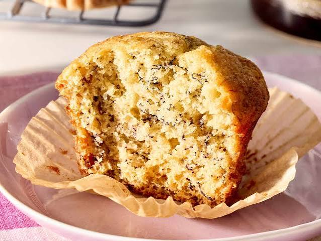

Banana Muffins

Description
These banana muffins are moist and delicious.
This is an easy recipe for kids to help make and perfect for using up ripe bananas. They're wonderful as-is or with walnuts or chocolate chips.
Ingredients
- Flour: All-purpose flour adds structure to the banana muffin batter.
- Leaveners: Baking soda and baking powder act as leaveners, which means they help the muffins rise.
- Salt: A pinch of salt enhances the flavors of the other ingredients.
- Bananas: Of course, you'll need mashed bananas!
- Sugar: White sugar sweetens things up a bit.
- Egg: An egg binds the muffin batter together and lends moisture.
- Butter: Melted butter adds even more moisture and richness.
Home